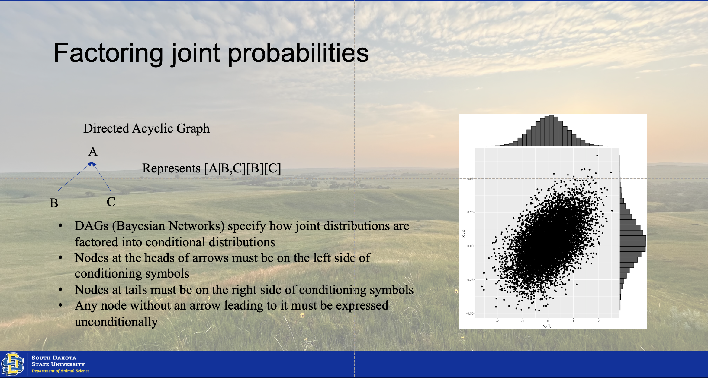
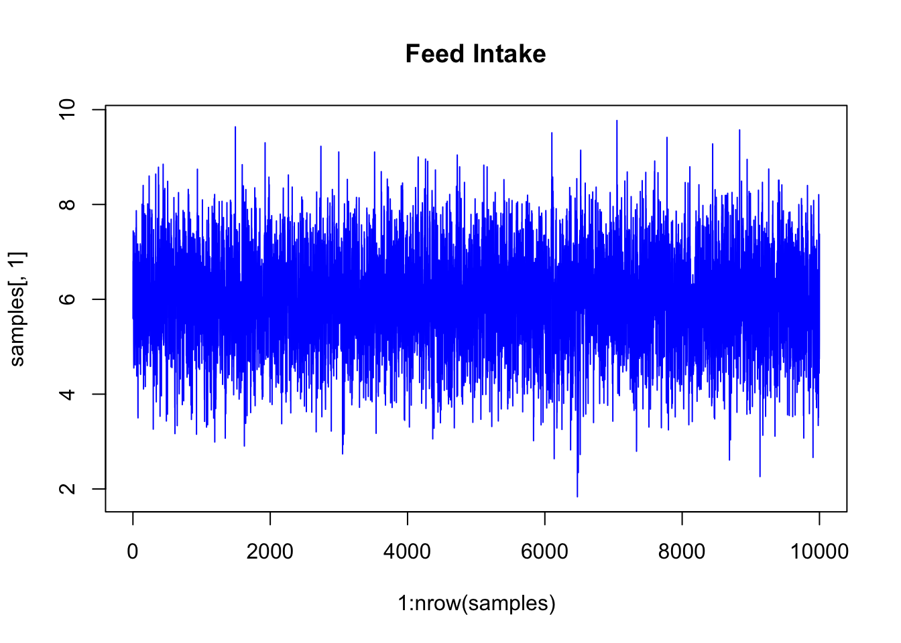
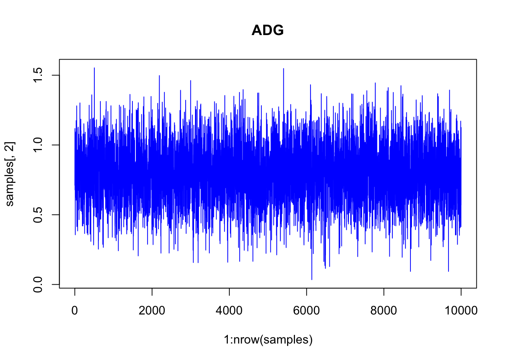
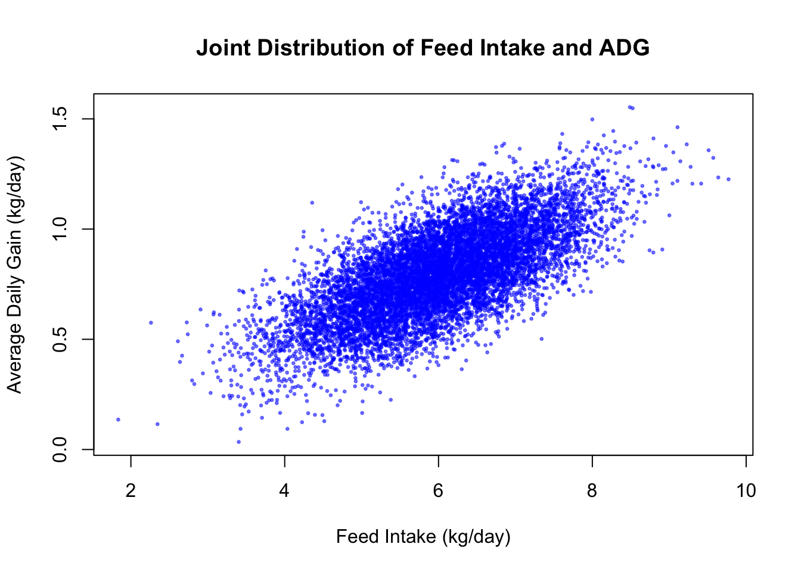
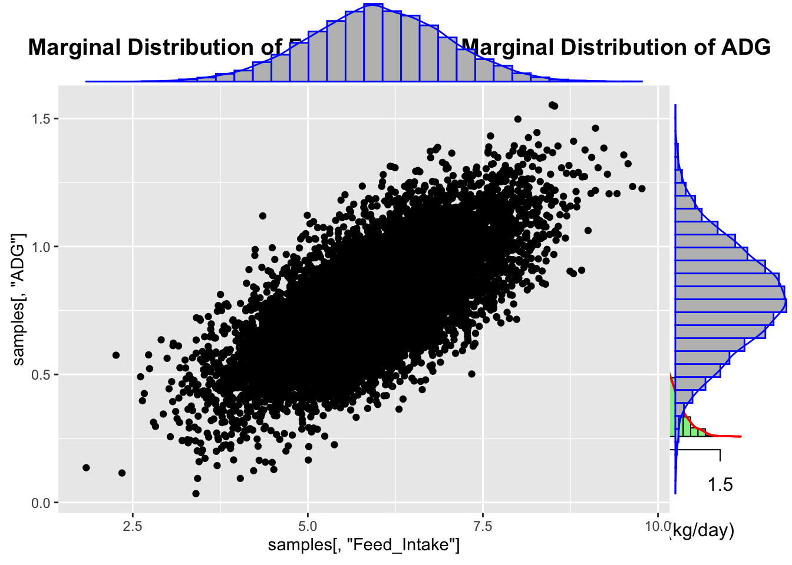

Chapter 5 Joint Distributions
The joint distribution results from the conjugation of two or more posterior distributions of multiple factors or parameters from the model. There are two ways of finding this conjugated distribution. The moments of the two distributions can be matched using calculus If they hold these moments in common. However, this is not always a given, and many times the distributions may not hold moments in common. This is where the computational intensity of Bayesian statistics comes into play. We will utilize a Monte Carlo simulation model to create a simulation of the conjugated distribtution model. We will implement it using a gibbs sampler, typical of the one illustrated below.

5.1 Marcov Monte Carlo
# Set random seed for reproducibility
set.seed(123)
# Parameters for bivariate normal distribution (based on typical livestock data)
mu_fi <- 6.0 # Mean feed intake (kg/day)
mu_adg <- 0.8 # Mean average daily gain (kg/day)
sigma_fi <- 1.0 # Standard deviation for feed intake
sigma_adg <- 0.2 # Standard deviation for ADG
rho <- 0.7 # Correlation coefficient (positive correlation between FI and ADG)
# Function to sample from conditional distribution of feed intake (FI) given ADG
sample_fi_given_adg <- function(adg, mu_fi, mu_adg, sigma_fi, sigma_adg, rho) {
mean <- mu_fi + rho * (sigma_fi / sigma_adg) * (adg - mu_adg)
variance <- sigma_fi^2 * (1 - rho^2)
rnorm(1, mean, sqrt(variance))
}
# Function to sample from conditional distribution of ADG given feed intake (FI)
sample_adg_given_fi <- function(fi, mu_fi, mu_adg, sigma_fi, sigma_adg, rho) {
mean <- mu_adg + rho * (sigma_adg / sigma_fi) * (fi - mu_fi)
variance <- sigma_adg^2 * (1 - rho^2)
rnorm(1, mean, sqrt(variance))
}
# Gibbs sampler function
gibbs_sampler <- function(n_samples, mu_fi, mu_adg, sigma_fi, sigma_adg, rho) {
samples <- matrix(0, nrow = n_samples, ncol = 2)
fi <- mu_fi # Initial value for feed intake
adg <- mu_adg # Initial value for ADG
for (i in 1:n_samples) {
fi <- sample_fi_given_adg(adg, mu_fi, mu_adg, sigma_fi, sigma_adg, rho)
adg <- sample_adg_given_fi(fi, mu_fi, mu_adg, sigma_fi, sigma_adg, rho)
samples[i, ] <- c(fi, adg)
}
return(samples)
}
samples## Feed_Intake ADG
## [1,] 5.599740 0.71108772
## [2,] 6.801947 0.92234325
## [3,] 6.520531 1.11783466
## [4,] 7.441581 0.82113450
## [5,] 5.583460 0.67803110
## [6,] 6.447278 0.91401063
## [7,] 6.685245 0.91174299
## [8,] 5.994150 1.05440331
## [9,] 7.245948 0.69354360
## [10,] 6.128271 0.75042981
## [11,] 5.063926 0.63781655
## [12,] 4.699644 0.51384369
## [13,] 4.552086 0.35638399
## [14,] 5.045644 0.68829617
## [15,] 4.796244 0.81055478
## [16,] 6.341498 0.80566510
## [17,] 6.659075 1.01769311
## [18,] 7.348652 1.08716880
## [19,] 7.400667 0.98725064
## [20,] 6.436876 0.80682054
## [21,] 5.527752 0.70418873
## [22,] 4.760987 0.93632703
## [23,] 7.339802 0.82716029
## [24,] 5.807344 0.70637640
## [25,] 6.229324 0.82019786
## [26,] 6.251598 0.83114645
## [27,] 6.078397 1.00645108
## [28,] 6.561346 1.09518377
## [29,] 5.927112 0.87329529
## [30,] 6.344983 0.87914026
## [31,] 6.548108 0.80498894
## [32,] 5.779504 0.62364885
## [33,] 4.617359 0.64978281
## [34,] 5.794326 0.77877611
## [35,] 6.584347 1.17461925
## [36,] 6.960501 0.60465485
## [37,] 6.034533 0.70354048
## [38,] 5.171055 0.83042863
## [39,] 5.903132 0.61208506
## [40,] 5.471774 0.70621075
## [41,] 5.675854 0.80964862
## [42,] 5.769066 0.85970461
## [43,] 6.051507 0.85459896
## [44,] 6.974396 0.99857180
## [45,] 6.462240 1.02879609
## [46,] 7.510290 1.08976735
## [47,] 7.184674 0.87617147
## [48,] 7.238300 0.88762783
## [49,] 7.868766 1.28052777
## [50,] 7.513523 0.86529106
## [51,] 5.721187 0.79765650
## [52,] 5.815625 0.72454842
## [53,] 5.056328 0.66145466
## [54,] 4.954557 0.41540828
## [55,] 4.382393 0.70479398
## [56,] 5.255899 0.78266054
## [57,] 4.783913 0.62181192
## [58,] 5.747273 0.80763147
## [59,] 6.102178 0.72279381
## [60,] 5.122968 0.53094068
## [61,] 5.142309 0.54459680
## [62,] 4.755761 0.58922922
## [63,] 6.579083 0.78795456
## [64,] 6.125941 0.82876672
## [65,] 5.413780 0.70774444
## [66,] 6.708721 0.96370864
## [67,] 6.602426 0.82399509
## [68,] 4.617671 0.76806121
## [69,] 4.845109 0.74400085
## [70,] 7.167376 0.75720339
## [71,] 6.351386 0.81174477
## [72,] 4.918371 0.43223415
## [73,] 3.569094 0.38384453
## [74,] 3.499554 0.54819167
## [75,] 6.618449 0.70275808
## [76,] 6.222211 0.94095079
## [77,] 6.730568 0.75825451
## [78,] 5.768585 0.72755338
## [79,] 6.148492 0.76759395
## [80,] 6.584277 0.82829799
## [81,] 6.850829 0.76926365
## [82,] 4.992492 1.12186197
## [83,] 6.828821 0.95863036
## [84,] 7.009808 0.87227542
## [85,] 6.622077 0.93978950
## [86,] 6.335451 0.85628882
## [87,] 6.172682 1.12817922
## [88,] 6.619207 0.73014946
## [89,] 5.782509 0.81389684
## [90,] 6.360379 0.78498540
## [91,] 5.188082 0.86675043
## [92,] 5.983926 0.67412970
## [93,] 5.390717 0.68653797
## [94,] 6.395525 0.86747634
## [95,] 6.774669 0.83714054
## [96,] 6.283136 0.79326468
## [97,] 6.043973 0.67827269
## [98,] 4.637855 0.89455881
## [99,] 6.759948 0.72767539
## [100,] 5.310404 0.53413615
## [101,] 6.639741 1.07701383
## [102,] 6.780197 0.98681121
## [103,] 6.357941 0.78209012
## [104,] 5.374140 0.62745132
## [105,] 6.575063 0.87279211
## [106,] 6.339931 0.88239580
## [107,] 7.168549 0.88988822
## [108,] 5.605817 0.98415176
## [109,] 6.329478 0.74285239
## [110,] 4.917108 0.46490098
## [111,] 4.417254 0.66668164
## [112,] 6.325976 0.94670045
## [113,] 6.253748 0.84405876
## [114,] 5.651023 0.64870400
## [115,] 6.102231 0.66925668
## [116,] 6.938758 0.91852584
## [117,] 6.568052 0.77404440
## [118,] 5.498960 0.54174685
## [119,] 4.965479 0.71500973
## [120,] 5.934134 0.67915298
## [121,] 5.013847 0.59021021
## [122,] 6.334137 0.68433970
## [123,] 5.467321 0.99713649
## [124,] 6.617867 0.69227731
## [125,] 5.148230 0.75008979
## [126,] 5.557080 0.65773923
## [127,] 5.256481 0.70883288
## [128,] 6.822479 0.90249739
## [129,] 7.130586 1.04837176
## [130,] 6.788146 0.69139825
## [131,] 5.247742 0.62471634
## [132,] 5.420182 0.90453102
## [133,] 8.003445 1.30152102
## [134,] 7.660235 0.78155057
## [135,] 5.657783 0.76483091
## [136,] 6.480368 1.00472804
## [137,] 7.205243 0.76944896
## [138,] 6.499838 0.80619617
## [139,] 6.146521 0.83116093
## [140,] 6.414836 0.86160126
## [141,] 5.024789 0.76866313
## [142,] 6.165999 0.78529723
## [143,] 6.032912 0.82375228
## [144,] 6.240972 1.06809585
## [145,] 6.781902 0.93347085
## [146,] 7.301541 1.13278290
## [147,] 7.982622 0.99508810
## [148,] 8.112867 1.10532818
## [149,] 8.401848 0.94331115
## [150,] 6.516574 1.05084391
## [151,] 6.367169 0.74389812
## [152,] 5.133393 0.52834601
## [153,] 4.737017 0.67048419
## [154,] 4.108261 0.56543335
## [155,] 6.062179 1.09972889
## [156,] 7.978277 1.18504779
## [157,] 6.114535 0.73012257
## [158,] 5.504018 0.83104577
## [159,] 6.033196 0.62487642
## [160,] 6.589995 1.01277204
## [161,] 6.914261 1.10197729
## [162,] 6.100844 0.90850224
## [163,] 6.006324 0.89854371
## [164,] 6.301467 0.93261031
## [165,] 7.417886 0.99954533
## [166,] 7.425091 0.82977039
## [167,] 5.588868 0.95942917
## [168,] 6.827511 0.62273550
## [169,] 4.405457 0.54808667
## [170,] 5.736593 0.74857125
## [171,] 6.265758 0.97417954
## [172,] 7.803000 1.06042082
## [173,] 6.874350 0.67199667
## [174,] 5.622922 0.66553262
## [175,] 4.833782 0.61103376
## [176,] 6.063433 0.52425914
## [177,] 4.729769 0.63882673
## [178,] 4.798016 0.67941309
## [179,] 5.871766 0.77732867
## [180,] 4.159647 0.90962824
## [181,] 6.237086 0.92620102
## [182,] 6.637212 1.03556228
## [183,] 7.408394 0.96721065
## [184,] 6.855303 0.78471104
## [185,] 6.558454 0.81233413
## [186,] 7.769091 0.81185577
## [187,] 5.710142 0.87730771
## [188,] 6.634884 0.80468909
## [189,] 5.304568 0.72327478
## [190,] 5.721244 0.50527088
## [191,] 4.993122 0.68620747
## [192,] 5.726506 0.61102423
## [193,] 5.678612 0.95190488
## [194,] 6.857485 0.75785343
## [195,] 5.541374 0.78522583
## [196,] 5.486207 0.41989550
## [197,] 5.301116 0.58368309
## [198,] 4.833287 0.85146013
## [199,] 5.627260 0.86861108
## [200,] 5.339831 0.65693757
## [201,] 5.446752 0.55562847
## [202,] 4.691399 0.61267642
## [203,] 5.823340 0.53952243
## [204,] 4.838554 0.74543401
## [205,] 5.424232 0.75185631
## [206,] 6.183019 0.86387709
## [207,] 6.690089 0.87908617
## [208,] 5.981377 0.41987567
## [209,] 4.603192 0.66590378
## [210,] 5.913014 0.70851242
## [211,] 6.950613 0.97399537
## [212,] 6.699191 1.07960283
## [213,] 6.465522 0.80085192
## [214,] 7.715105 1.04170430
## [215,] 8.012566 0.87629943
## [216,] 6.130992 0.87238860
## [217,] 6.467630 0.72183468
## [218,] 5.740175 0.60973808
## [219,] 5.843055 0.93296461
## [220,] 4.876417 0.81919072
## [221,] 5.180884 0.75027787
## [222,] 6.297237 0.81306324
## [223,] 5.585018 0.76551506
## [224,] 6.192682 0.95313635
## [225,] 5.070315 0.43612246
## [226,] 5.747940 0.91420013
## [227,] 6.710559 1.00162616
## [228,] 7.360685 0.61044017
## [229,] 6.129437 0.74885110
## [230,] 5.985672 0.75583714
## [231,] 6.468138 0.81576743
## [232,] 6.425472 0.80376507
## [233,] 5.232772 0.86541209
## [234,] 6.758051 1.15240101
## [235,] 7.279933 1.13987312
## [236,] 8.600287 1.12383653
## [237,] 6.188652 0.79222501
## [238,] 5.819932 0.79645472
## [239,] 7.210422 0.92287640
## [240,] 6.696446 0.86498265
## [241,] 6.242044 0.87874257
## [242,] 7.224134 0.98870649
## [243,] 7.169544 1.07497962
## [244,] 7.615707 0.94415909
## [245,] 7.666382 0.97888203
## [246,] 6.550542 1.07761438
## [247,] 7.895811 0.90973158
## [248,] 5.760563 0.57250635
## [249,] 5.333637 0.73025318
## [250,] 6.015916 0.88109214
## [251,] 5.853985 0.63762935
## [252,] 6.164974 0.93036936
## [253,] 5.378532 0.69940475
## [254,] 5.008082 0.36536905
## [255,] 4.585999 0.59072615
## [256,] 5.198006 0.71859359
## [257,] 6.345284 0.87770492
## [258,] 5.831744 0.67149383
## [259,] 5.456102 0.76813362
## [260,] 5.145987 0.65411366
## [261,] 6.180165 0.80975758
## [262,] 5.535379 0.69554026
## [263,] 6.430409 0.93881928
## [264,] 7.369031 1.01153144
## [265,] 7.033355 0.86490611
## [266,] 6.659493 0.82001006
## [267,] 5.055549 0.68605784
## [268,] 6.990818 1.05310799
## [269,] 7.718035 1.09177980
## [270,] 6.586633 0.85324278
## [271,] 5.991212 0.73182590
## [272,] 6.264267 0.66597962
## [273,] 6.149638 0.94437496
## [274,] 5.649325 0.84224320
## [275,] 7.883380 0.98408693
## [276,] 7.247687 0.86295535
## [277,] 7.013550 0.97757915
## [278,] 7.801231 0.84378958
## [279,] 6.116630 0.74106816
## [280,] 5.652863 0.66147903
## [281,] 4.919693 0.73141513
## [282,] 4.983265 0.86961911
## [283,] 5.396546 0.72995342
## [284,] 6.135467 0.90276801
## [285,] 6.144198 0.83154285
## [286,] 6.796880 0.70353824
## [287,] 5.104110 0.72033801
## [288,] 5.403545 0.91217203
## [289,] 6.873402 0.93258369
## [290,] 5.387289 0.71794829
## [291,] 5.486853 0.71354140
## [292,] 4.853593 0.71072561
## [293,] 4.945576 0.62006972
## [294,] 5.642637 0.63806068
## [295,] 5.849552 0.59090192
## [296,] 3.261576 0.48303138
## [297,] 5.490875 0.68789566
## [298,] 5.967653 0.63037351
## [299,] 5.315505 0.42686641
## [300,] 5.537564 1.00090741
## [301,] 7.470174 1.00191845
## [302,] 6.682912 0.67906990
## [303,] 6.141193 0.78966812
## [304,] 5.494830 0.52759860
## [305,] 4.832522 0.51528287
## [306,] 4.719954 0.44688543
## [307,] 5.969279 0.79341344
## [308,] 6.744611 0.53264855
## [309,] 4.740622 0.52720890
## [310,] 4.171887 0.76496418
## [311,] 4.866661 0.68680779
## [312,] 6.208304 0.85461316
## [313,] 5.566089 0.87367777
## [314,] 6.379696 0.70125962
## [315,] 4.663143 0.91088294
## [316,] 5.903542 0.52146725
## [317,] 5.405959 0.76114397
## [318,] 4.897173 0.36809451
## [319,] 4.405274 0.73947672
## [320,] 6.242452 0.76353773
## [321,] 5.276652 0.73744743
## [322,] 5.893439 0.87502225
## [323,] 5.979922 0.92564248
## [324,] 5.846431 0.73128905
## [325,] 6.288559 0.98179450
## [326,] 5.251911 0.71057746
## [327,] 6.121776 0.60982952
## [328,] 5.677639 0.63658247
## [329,] 6.156645 0.89884092
## [330,] 6.895156 0.94256407
## [331,] 7.115743 1.15338088
## [332,] 8.641015 1.16568648
## [333,] 5.673759 0.75882906
## [334,] 6.002702 0.77819050
## [335,] 6.329506 0.99048453
## [336,] 6.296782 0.79954432
## [337,] 6.282521 0.76096531
## [338,] 5.928557 0.50981003
## [339,] 4.184567 0.35619793
## [340,] 3.837083 0.39816800
## [341,] 4.866608 0.78159898
## [342,] 5.416141 0.57588261
## [343,] 4.471674 0.52681932
## [344,] 4.873167 0.71131774
## [345,] 5.460140 0.42755199
## [346,] 4.631135 0.77792307
## [347,] 6.773704 0.79563211
## [348,] 4.879379 0.99419430
## [349,] 6.563688 0.86499744
## [350,] 6.527841 0.64336681
## [351,] 4.931731 0.43042321
## [352,] 4.211513 0.56658687
## [353,] 4.208457 0.63345030
## [354,] 5.623709 0.61817152
## [355,] 5.525229 0.84037938
## [356,] 6.899101 0.89547338
## [357,] 6.267287 0.82503489
## [358,] 7.117032 1.11707685
## [359,] 7.705651 0.99775065
## [360,] 6.958675 0.99181588
## [361,] 5.927452 0.54299203
## [362,] 5.558830 0.51980702
## [363,] 5.020527 0.69861631
## [364,] 6.047839 0.83375293
## [365,] 5.594773 0.88414944
## [366,] 7.536156 1.14091933
## [367,] 5.805173 0.97262372
## [368,] 6.564151 0.95395391
## [369,] 6.983059 0.92381876
## [370,] 6.379617 0.99871112
## [371,] 7.203674 1.10995215
## [372,] 8.786583 1.28501913
## [373,] 7.845667 0.74265178
## [374,] 7.721550 0.97207689
## [375,] 8.298169 1.17525345
## [376,] 8.412046 1.12201667
## [377,] 7.492322 1.03948433
## [378,] 6.705278 0.88154330
## [379,] 7.008710 0.91244541
## [380,] 4.938363 0.62339218
## [381,] 5.767360 0.85547792
## [382,] 6.634490 0.64714819
## [383,] 5.728353 0.90020739
## [384,] 7.262385 0.94460306
## [385,] 6.276233 1.05117843
## [386,] 5.687986 0.69392619
## [387,] 5.955435 0.56269658
## [388,] 5.369132 0.97989115
## [389,] 6.626719 0.84796949
## [390,] 6.507048 0.83112724
## [391,] 6.689829 1.02575534
## [392,] 6.792066 0.74282397
## [393,] 4.858486 0.55549108
## [394,] 5.713662 0.48022509
## [395,] 3.533682 0.36133707
## [396,] 4.746334 0.49400343
## [397,] 5.562277 0.78633360
## [398,] 5.830307 0.89319497
## [399,] 6.603531 0.82080202
## [400,] 6.237856 0.92578327
## [401,] 6.694679 0.80327235
## [402,] 6.622190 1.05177880
## [403,] 7.078525 0.97157580
## [404,] 6.546508 1.18522308
## [405,] 7.545610 0.99377643
## [406,] 4.887206 0.42064188
## [407,] 4.616777 0.63581344
## [408,] 5.623074 0.86456493
## [409,] 6.087325 0.98570344
## [410,] 5.991868 0.62626137
## [411,] 4.514243 0.69801526
## [412,] 5.583837 0.85454570
## [413,] 5.999729 0.71542301
## [414,] 5.440924 0.45712277
## [415,] 3.964657 0.30908828
## [416,] 5.034746 0.57954860
## [417,] 5.792207 0.98750719
## [418,] 6.519321 0.91325090
## [419,] 5.145866 0.56349178
## [420,] 5.212367 0.73244949
## [421,] 5.221254 1.07445019
## [422,] 6.633220 0.89782657
## [423,] 6.806437 0.90918500
## [424,] 5.922548 0.93845630
## [425,] 7.638327 1.02512466
## [426,] 7.189475 0.95261328
## [427,] 7.260041 0.81127196
## [428,] 7.696878 0.95136136
## [429,] 5.487938 0.67819021
## [430,] 5.678437 0.98688061
## [431,] 7.304816 1.00302138
## [432,] 5.718285 0.63686498
## [433,] 5.312419 1.06838368
## [434,] 5.610875 0.90706937
## [435,] 5.998222 1.03770221
## [436,] 6.018406 0.82309030
## [437,] 5.295580 0.83042911
## [438,] 7.166132 1.24187722
## [439,] 8.116171 1.35953503
## [440,] 8.848497 1.17995412
## [441,] 7.670512 0.89504316
## [442,] 6.200390 1.00244313
## [443,] 7.095105 1.01863842
## [444,] 6.023861 0.71699873
## [445,] 5.163458 0.73934361
## [446,] 5.080339 0.75152299
## [447,] 5.033050 0.92579334
## [448,] 6.769205 0.80756532
## [449,] 6.198620 0.77746639
## [450,] 6.186185 0.86084933
## [451,] 5.488750 0.61540281
## [452,] 5.567863 0.97360419
## [453,] 7.382186 0.90429998
## [454,] 6.954877 0.92674581
## [455,] 6.658791 0.92941785
## [456,] 8.292201 0.95161510
## [457,] 6.602724 0.63014976
## [458,] 5.826751 0.93237219
## [459,] 7.495712 0.73443394
## [460,] 6.065295 1.03672007
## [461,] 6.532854 0.84429837
## [462,] 6.128952 0.87018832
## [463,] 6.720678 1.08911743
## [464,] 6.943719 0.96015480
## [465,] 8.337328 1.18879912
## [466,] 7.495594 0.81767244
## [467,] 6.063893 0.77733335
## [468,] 5.912778 0.70560290
## [469,] 5.179126 0.58213053
## [470,] 5.084270 0.86720622
## [471,] 6.984419 0.88640400
## [472,] 5.098429 0.55314939
## [473,] 4.809116 0.64807877
## [474,] 4.995079 0.94592246
## [475,] 6.316291 0.67089474
## [476,] 5.447251 0.57901843
## [477,] 5.338082 0.74070103
## [478,] 6.046394 0.57484746
## [479,] 5.369586 0.75608311
## [480,] 4.831416 0.77285181
## [481,] 6.464991 1.19355013
## [482,] 7.489334 1.01518161
## [483,] 6.822112 0.92506025
## [484,] 5.117637 0.43778453
## [485,] 4.676872 0.53176905
## [486,] 5.100281 0.37249852
## [487,] 3.433460 0.28336113
## [488,] 4.895950 0.48853730
## [489,] 4.338913 0.57885613
## [490,] 4.995509 0.68028388
## [491,] 7.227137 0.81117366
## [492,] 5.820959 0.70112623
## [493,] 6.734008 0.79285671
## [494,] 5.916377 0.90071791
## [495,] 5.596528 0.97992029
## [496,] 7.112312 0.80229627
## [497,] 6.332670 0.81610751
## [498,] 6.280066 0.82635826
## [499,] 6.856755 0.72697001
## [500,] 5.371172 0.67637254
## [ reached 'max' / getOption("max.print") -- omitted 9500 rows ]# Run the Gibbs sampler
n_samples <- 10000
samples <- gibbs_sampler(n_samples, mu_fi, mu_adg, sigma_fi, sigma_adg, rho)
plot(1:nrow(samples), samples[,1], type = 'l', col = 'blue', main = 'Feed Intake')

# Name the columns for clarity
colnames(samples) <- c("Feed_Intake", "ADG")
# Plot the joint distribution (scatter plot)
plot(samples[, "Feed_Intake"], samples[, "ADG"],
xlab = "Feed Intake (kg/day)", ylab = "Average Daily Gain (kg/day)",
main = "Joint Distribution of Feed Intake and ADG",
pch = 20, cex = 0.5, col = rgb(0, 0, 1, alpha = 0.5))
# Plot marginal distributions
par(mfrow = c(1, 2)) # Set up a 1x2 plot layout
# Marginal distribution of Feed Intake
hist(samples[, "Feed_Intake"], breaks = 50, main = "Marginal Distribution of Feed Intake",
xlab = "Feed Intake (kg/day)", col = "lightblue", probability = TRUE)
lines(density(samples[, "Feed_Intake"]), col = "red", lwd = 2)
# Marginal distribution of ADG
hist(samples[, "ADG"], breaks = 50, main = "Marginal Distribution of ADG",
xlab = "Average Daily Gain (kg/day)", col = "lightgreen", probability = TRUE)
lines(density(samples[, "ADG"]), col = "red", lwd = 2)
# Reset plot layout
par(mfrow = c(1, 1))
p <- ggplot(NULL, aes(x=samples[,"Feed_Intake"], y=samples[,"ADG"]))+
geom_point()
# ggMarginal(data = NULL, p = p, x=samples[,"Feed_Intake"], y=samples[,"ADG"], type = "histogram" )
ggMarginal(data = NULL, p = p, x=samples[,"Feed_Intake"], y=samples[,"ADG"], type = "densigram", color = 'blue', fill = 'grey')